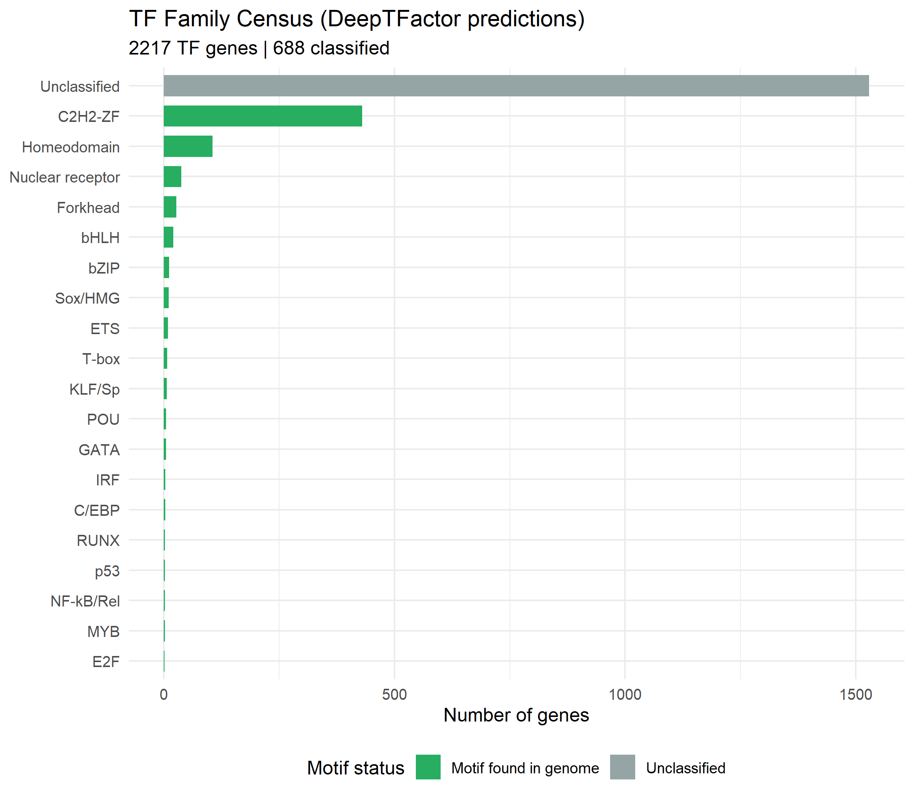
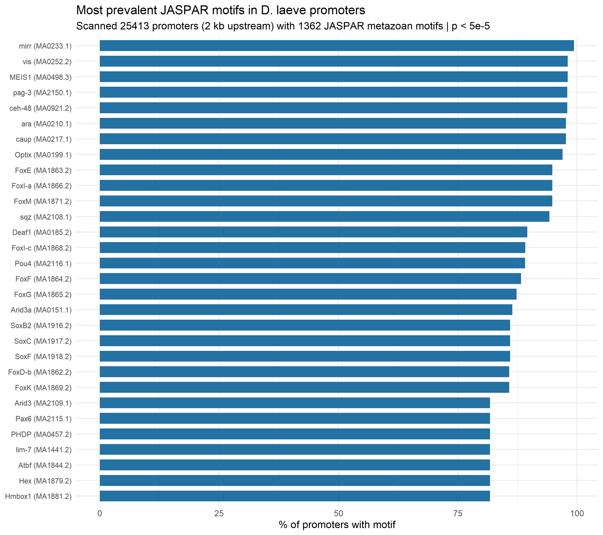
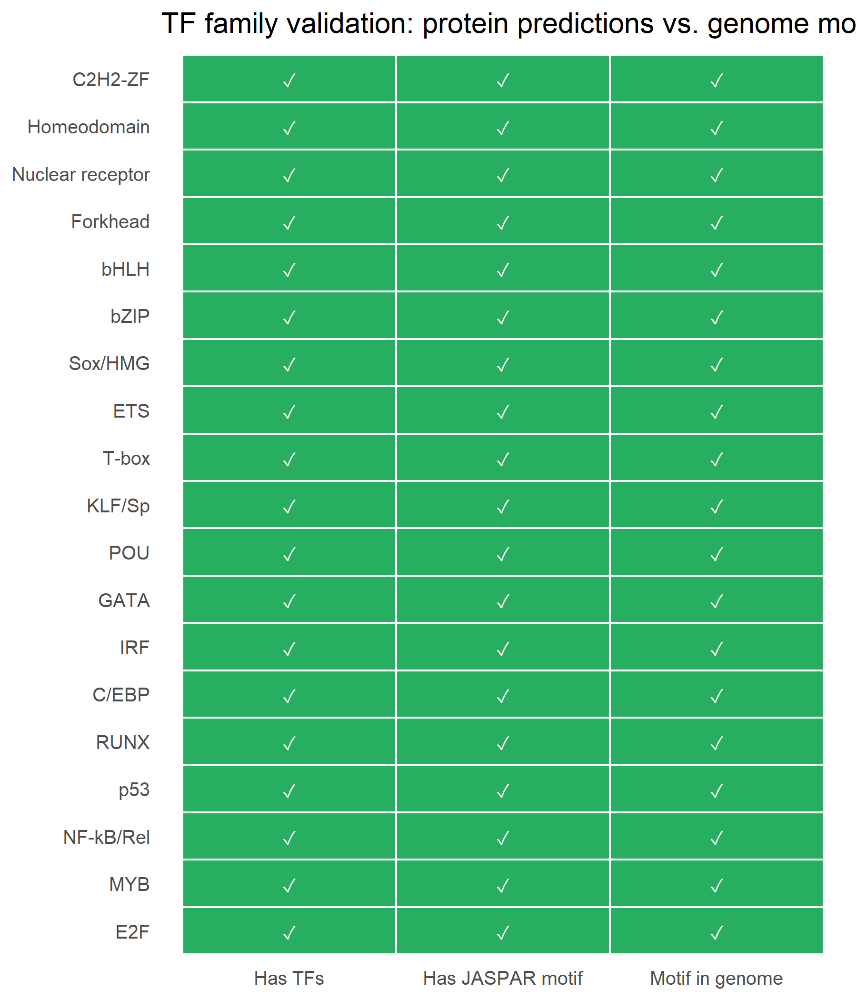
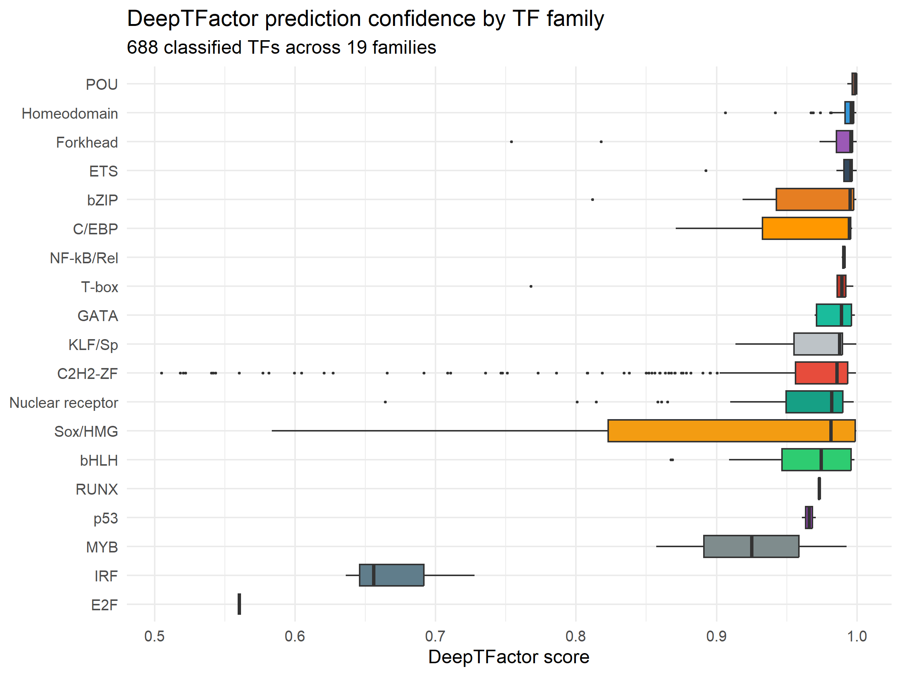

D. laeve genome-level TF and motif inventory | Generated: 2026-03-21
| Total DeepTFactor TF mRNAs | 4824 |
| Unique TF genes (deduplicated) | 2217 |
| Classified TFs (with family) | 688 |
| Unclassified TFs | 1529 |
| TF families identified | 19 |
| JASPAR motifs scanned | 1362 |
| Promoters scanned (2 kb upstream) | 25,413 |
| Promoters with ≥1 motif hit | 25,413 (100%) |
| Confirmed TF families (TF + motif in genome) | 19 |
| Orphan TF families (motif not in promoters) | 0 |
| Dark matter (TF family, no JASPAR motif) | 0 |
| Orphan motif classes (in genome, no predicted TF) | 19 |




| TF Family | TFs | JASPAR Motif? | Motif in Genome? | Max Promoters |
|---|---|---|---|---|
| bHLH | 20 | YES | YES | 20,215 |
| bZIP | 11 | YES | YES | 16,853 |
| C/EBP | 3 | YES | YES | 16,758 |
| C2H2-ZF | 430 | YES | YES | 24,896 |
| E2F | 1 | YES | YES | 4,939 |
| ETS | 9 | YES | YES | 10,744 |
| Forkhead | 27 | YES | YES | 24,098 |
| GATA | 5 | YES | YES | 19,393 |
| Homeodomain | 105 | YES | YES | 25,253 |
| IRF | 3 | YES | YES | 9,748 |
| KLF/Sp | 6 | YES | YES | 12,636 |
| MYB | 2 | YES | YES | 16,530 |
| NF-kB/Rel | 2 | YES | YES | 20,666 |
| Nuclear receptor | 38 | YES | YES | 14,467 |
| p53 | 2 | YES | YES | 3,509 |
| POU | 5 | YES | YES | 22,647 |
| RUNX | 2 | YES | YES | 7,531 |
| Sox/HMG | 10 | YES | YES | 21,849 |
| T-box | 7 | YES | YES | 5,557 |
| Motif | ID | Family | Promoters | % |
|---|---|---|---|---|
| mirr | MA0233.1 | TALE-type HD | 25,253 | 99.4 |
| vis | MA0252.2 | TALE-type homeo domain factors | 24,914 | 98 |
| MEIS1 | MA0498.3 | TALE-type homeo domain factors | 24,914 | 98 |
| pag-3 | MA2150.1 | More than 3 adjacent zinc fingers | 24,896 | 98 |
| ceh-48 | MA0921.2 | HD-CUT | 24,895 | 98 |
| ara | MA0210.1 | TALE-type homeo domain factors | 24,820 | 97.7 |
| caup | MA0217.1 | TALE-type homeo domain factors | 24,820 | 97.7 |
| Optix | MA0199.1 | HD-SINE | 24,646 | 97 |
| FoxE | MA1863.2 | FOX | 24,098 | 94.8 |
| FoxI-a | MA1866.2 | FOX | 24,098 | 94.8 |
| FoxM | MA1871.2 | FOX | 24,098 | 94.8 |
| sqz | MA2108.1 | More than 3 adjacent zinc fingers | 23,942 | 94.2 |
| Deaf1 | MA0185.2 | DEAF | 22,756 | 89.5 |
| FoxI-c | MA1868.2 | FOX | 22,655 | 89.1 |
| Pou4 | MA2116.1 | POU domain factors | 22,647 | 89.1 |
| FoxF | MA1864.2 | FOX | 22,432 | 88.3 |
| FoxG | MA1865.2 | FOX | 22,193 | 87.3 |
| Arid3a | MA0151.1 | ARID-related | 21,965 | 86.4 |
| SoxB2 | MA1916.2 | SOX-related factors | 21,849 | 86 |
| SoxC | MA1917.2 | SOX-related factors | 21,849 | 86 |
| SoxF | MA1918.2 | SOX-related factors | 21,849 | 86 |
| FoxD-b | MA1862.2 | FOX | 21,801 | 85.8 |
| FoxK | MA1869.2 | FOX | 21,801 | 85.8 |
| Arid3 | MA2109.1 | ARID-related | 20,772 | 81.7 |
| Pax6 | MA2115.1 | Paired plus homeo domain | 20,772 | 81.7 |
| PHDP | MA0457.2 | Paired-related HD factors | 20,772 | 81.7 |
| lim-7 | MA1441.2 | HD-LIM | 20,772 | 81.7 |
| Atbf | MA1844.2 | HOX | 20,772 | 81.7 |
| Hex | MA1879.2 | ? | 20,772 | 81.7 |
| Hmbox1 | MA1881.2 | POU domain factors | 20,772 | 81.7 |